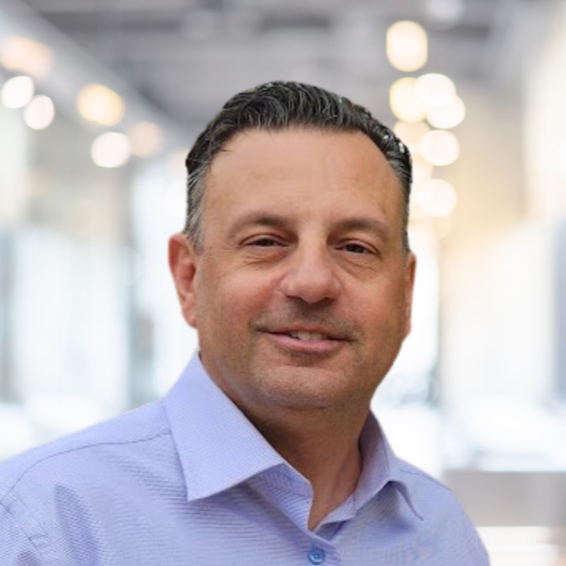

“San Diego gave me everything — my family, my career, my life. I owe this city a debt I intend to repay by leading it back to greatness.”
George Kalamaras isn’t a career politician — he’s a San Diego native who has called this city home his entire life. Born and raised right here in America’s Finest City, George has spent over 25 years as a leader in the insurance industry, rising to Vice President of Business Development at one of the nation’s largest insurance agencies. A UC Irvine graduate, George knows what it means to build something from the ground up, manage complex operations, and deliver results that matter.
George has been in San Diego his entire life, and he has seen a lot happen and a lot change. Some of it for the better — but a lot of it for the worse. He’s watched neighborhoods decline. He’s watched streets that were once safe and clean become unrecognizable. He’s watched the city he loves lose some of the magic, the pride, and the identity that once made it the envy of every city in America. And he’s had enough.
George wants to help this city rebuild to the glory it once had. He feels a deep, personal gratitude and an unshakeable love for San Diego — because this city didn’t just give him a place to live. It gave him a life. San Diego helped George, his family, and multiple generations of his family build successful small businesses, raise their children, enjoy life, and thrive. The Kalamaras family story is a San Diego story — and George has never forgotten that.
That’s why George feels nothing but a deep debt of gratitude toward this city. And he would love nothing more than to repay it — by dedicating his life to leading San Diego back to its former self and its former glory. Not as a politician, but as a proud San Diegan who owes everything to the city that raised him.
George is a proud husband and devoted father. He and his lovely wife Nancy have built their entire life right here in San Diego, raising two amazing children — Penelope and Kosta — who are both currently attending college. But the Kalamaras story in San Diego goes back even further — multiple generations of his family have called this city home, built small businesses here, and contributed to making San Diego the special place it is. George wants nothing — absolutely nothing — more than to dedicate the rest of his life to making San Diego a greater, stronger place so that every family here can continue to thrive for generations to come. He should be our mayor.
If you grew up in San Diego, you know the feeling. You know what it was like to put on your Chargers jersey on game day. To high-five a complete stranger in the parking lot. To sit in those stands and feel like this entire city — every neighborhood, every background, every walk of life — was one team.
That wasn’t just football. That was identity. That was community. That was San Diego standing up and saying to the rest of the country: we’re here, we matter, and we can compete with anyone.
When we lost the Chargers, we didn’t just lose a football team. We lost a piece of who we are. We lost that powerful, unifying feeling of rooting for something bigger than ourselves — of coming together on Sundays as one San Diego, competing against other great American cities, and feeling like we were part of something that put us on the map.
George understands that feeling is not just about what happens on a field. It’s about what happens when a city believes in itself. When neighbors have something to rally around. When a community stands shoulder to shoulder and says: this is our city, and we’re going to win.
That same competitive fire — that same sense of pride and purpose — is exactly what San Diego needs right now. Because today, we’re not just competing against other NFL cities. We’re competing on a global scale — for jobs, for talent, for investment, for the quality of life our families deserve. And we need a leader who understands that when San Diego comes together with a common cause, there is absolutely nothing we can’t accomplish.
“The Chargers didn’t just give us football. They gave us each other. They gave us a reason to believe that San Diego could take on anyone, anywhere. I want to bring that feeling back — not just in a stadium, but in every neighborhood, every school, every business, and every family in this city. That’s what ‘Make San Diego Great Again’ means to me.”
George will fight relentlessly to bring professional football back to San Diego. He’ll champion the Padres, SD Loyal, and every team that represents our city on a national stage. Because when we have something to cheer for together, we’re not just fans — we’re a city united. And a united San Diego is an unstoppable San Diego.
Enough managing the problem — it’s time to solve it. George will unite city agencies, nonprofits, healthcare providers, and the private sector for a comprehensive approach that gets people off the streets with real support, real housing, and real accountability.
San Diegans deserve clean, safe, beautiful neighborhoods. George will expand sanitation services, crack down on illegal dumping, and restore civic pride in every community — from the Gaslamp to Pacific Beach to Barrio Logan.
San Diego is a world-class city that lost its world-class team. George will work relentlessly to bring professional football back and champion every team that puts our city on the national and global stage.
Safe streets are the foundation of everything. George will fully fund and support our police, fire, and first responders while investing in community programs that prevent crime before it starts.
Crumbling roads, aging pipes, broken sidewalks — the basics have been neglected too long. George will cut the red tape, prioritize smart spending, and get projects done on time and on budget.
With 25+ years in business, George knows small businesses are San Diego’s backbone. He’ll cut unnecessary regulations, streamline permitting, and make sure our local entrepreneurs thrive.
I want to join the movement. Please share more with me!